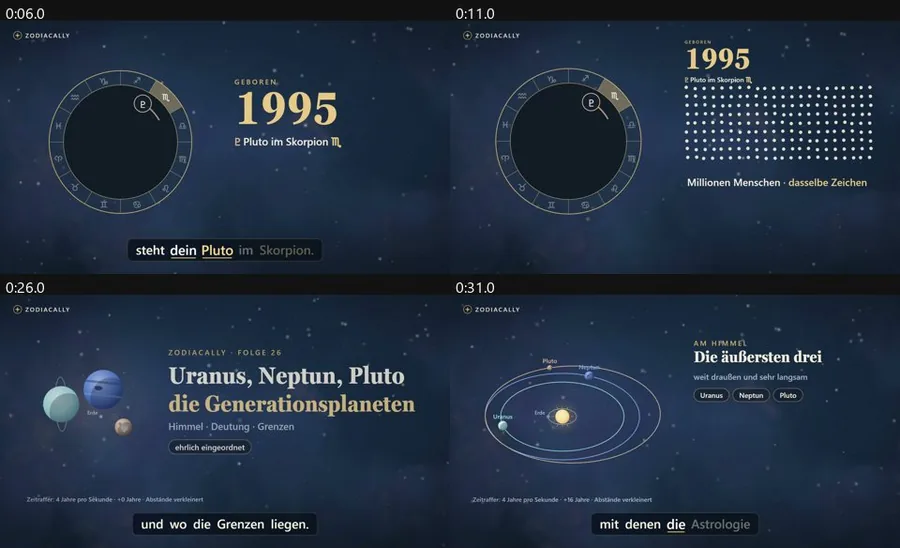

Projekt 5 von 8 · Aleks Paramonov
YouTube-Kanäle
Hörgeschichten und Astrologie-Erklärvideos auf Deutsch, produziert von KI-Agenten
öffentlich Kanal Hörgeschichten Kanal Zodiacally
- Status
-
- Hörgeschichten: 27 Folgen vom 11.08.2026 bis 12.11.2026.
- Zodiacally: 20 Erklärvideos vom 15.09.2026 bis 17.11.2026, dazu Shorts.
- Zeitraum
- seit 08/2026
- Mein Anteil
- Allein aufgebaut, mit Coding-Agenten: die Abläufe, in denen KI-Agenten die Folgen produzieren. Bei den Hörgeschichten nehme ich Geschichte und Titelbild ab und gebe den Upload frei.
YouTube, Hörgeschichte

Zodiacally, Folge 26Prüfbogen


Was es tut
Ich betreibe zwei Kanäle. „True Crime Mystery Horror Hörbücher“ bringt lange Hörgeschichten, meist knapp eine Stunde je Folge. Der Kanal Zodiacally erklärt Astrologie in Videos von fünf bis neun Minuten und gehört zu meinem Projekt Zodiacally. Die Folgen produzieren KI-Agenten. In den Beschreibungen beider Kanäle steht, dass die Stimme eine KI-Stimme ist.
Was ich gelöst habe
Hörgeschichten: Schnitt in DaVinci Resolve über einen MCP-Server
Das Skript entsteht in vier Akten, die Stimme kommt von ElevenLabs, die Bilder aus der Bildgenerierung. Geschnitten und exportiert wird nur über einen MCP-Server in DaVinci Resolve, ein Community-Projekt, das ich eingerichtet und unter Windows habe reparieren lassen. Die fertige Datei wird automatisch geprüft, dann lädt ein Agent sie in YouTube Studio hoch und plant den Termin.
MCP-Server Eine Schnittstelle, über die KI-Agenten ein Programm bedienen.
Zodiacally: jeden Tag ein Lauf, ohne Rückfragen
Jeden Tag um 10 Uhr startet ein geplanter Lauf mit der Vorgabe „Arbeite komplett selbstständig und stell Alex keine Fragen“. Sofort veröffentlichen darf er nie, nur zu einem festen Termin. Eine Folge braucht etwa drei bis vier Stunden, davon rund 40 Minuten Rendern.
- Recherche mit Quellen und Skript
- Stimme mit ElevenLabs, Abgleich per Spracherkennung
- Animation mit HyperFrames als Code
- Render, Prüfung und Titelbild
- Upload mit festem Termin
Technik
Claude Code und Codex, ElevenLabs für Stimme und Spracherkennung, Bildgenerierung, HyperFrames, FFmpeg, DaVinci Resolve über einen MCP-Server, YouTube Studio
Zum Nachprüfen
- Hörgeschichte „Was der Wald gehört hat“, 53 Minuten: youtube.com/
watch?v=cQ8pNBGsnB4 - Zodiacally-Folge „Finsternisse einfach erklärt“: youtube.com/
watch?v=69AYuaFap4s